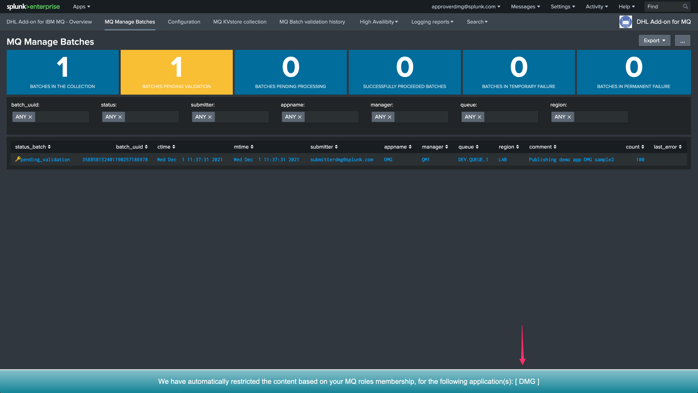
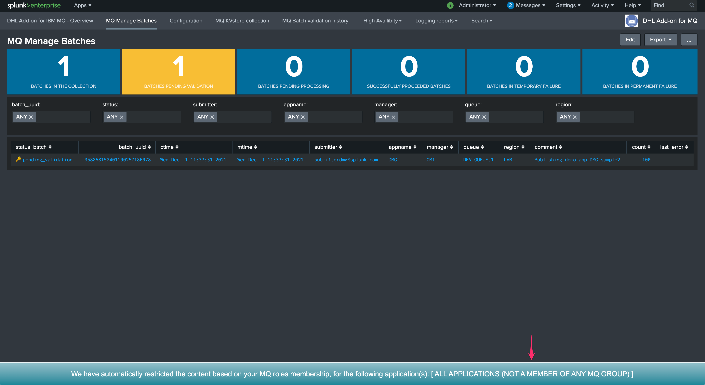
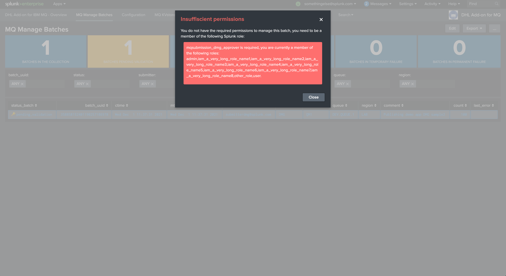

Role Based Access Control (RBAC)¶
Builtin roles¶
The application embedds different roles as part of its configuration, which would used via inheritance to provide access and permissions to the application and its sub-components.
The emebedded roles are:
mqsubmission: provides access to the application for a submitter or an approvermqsubmission_superadmin: provides access to the application and grants permissions to manage batches of all applications, in addition it provides the permissions for the technical KVstore collections (for High-Availability purposes)
In addition with the builtin roles, the application expects a specific role naming convention which is automatically used to identify which applications a submitter or a provider is member of and what kind permissions are allowed, this is described in the following document.
Hint
The role mqsubmission_superadmin role is a special role which provides access to all applications (submitting and managing batches), and is designed to be used for the bearer token context used by the Heavy Forwarders.
Providing RBAC access for MQ submitters¶
A typical user who is supposed to be submitting messages to MQ, would need first to inherit from the mqsubmission role:
mqsubmission
This role provides:
Access to the application and its user interfaces
Access to the custom command allowing to interract with the application (such as the putmqrelay custom command to push messages to MQ)
Access with write permission to the functional KVstores
In addition, the user should be a member of one or more application MQ roles, which naming convention is the following:
mqsubmission_<applicationName>_submitter
Warning
Users need to be direct members of the approver roles, inheritance is not taken into account by the application.
The user interfaces will extract automatically the list of the applications the user is member of using this pattern, which is then used to filter out the results based on all the application the submitter is a member of.
A submitter role allows posting to MQ, but does not allow the user to validate a pending batch that was submitted, this is addressed via approver roles as follows.
Providing RBAC access for MQ approvers¶
When a user that is allowed to do so submits messages to be sent to MQ, this creates automatically one or more batches that are pending for approval.
Only users which are members of the relevant application’s appover role can use the user interface to validate a pending batch.
The naming convention for approver roles is the following:
mqsubmission_<applicationName>_approver
Warning
Users need to be proper members of the approver roles, inheritance is not taken into account by the application.
Typically, approvers would inherit the mqsubmission role which would provide them with the needed permissions on the application:
mqsubmission
Hint
A user can be a member of both a submitter and approver role for a given application, which allows the user to both submit and validate batches
RBAC in the user interfaces¶
Content automated filtering¶
Within the user interfaces, the role membership defines automated filters to scope what the users have access to, in addition with how the users can manage or not the batches lifecycle.
When opening the user interfaces, a message is shown to inform the users of the applications it is a member of:
{kind=link}
Hint
Only the content from the applications the user connecting is a member of will be displayed, other applications related content will not be visible
A user that has the access granted, but is not part of any application mqsubmission role, will get the following message displayed:
{kind=link}
Validating batches¶
To be able to validate a pending batch, or perform administrative actions such as cancelling a batch, the user needs to:
Either be a member of the approver group for that application (mqsubmission_<applicationName>_approver)
Either be a member of the mqsubmission_superadmin role
A user that can get the content displayed (because he has been granted access) BUT is not part of an approval role would get the validation denied:
{kind=link}